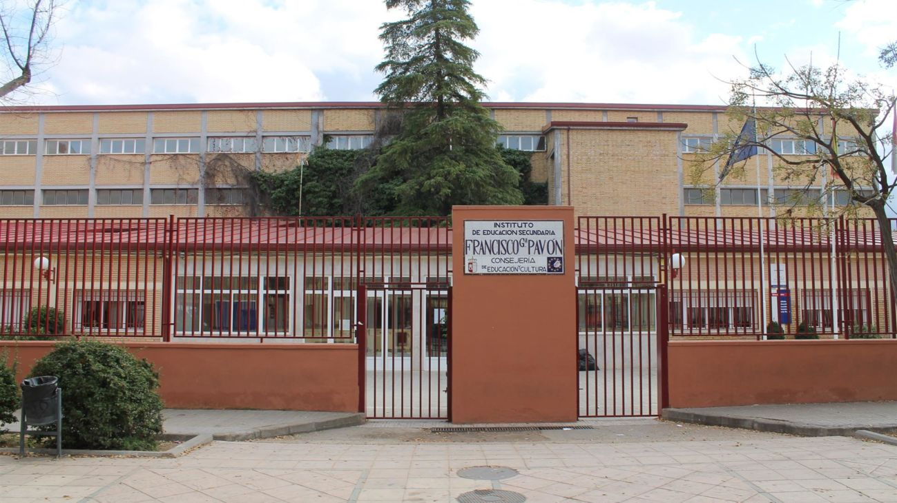
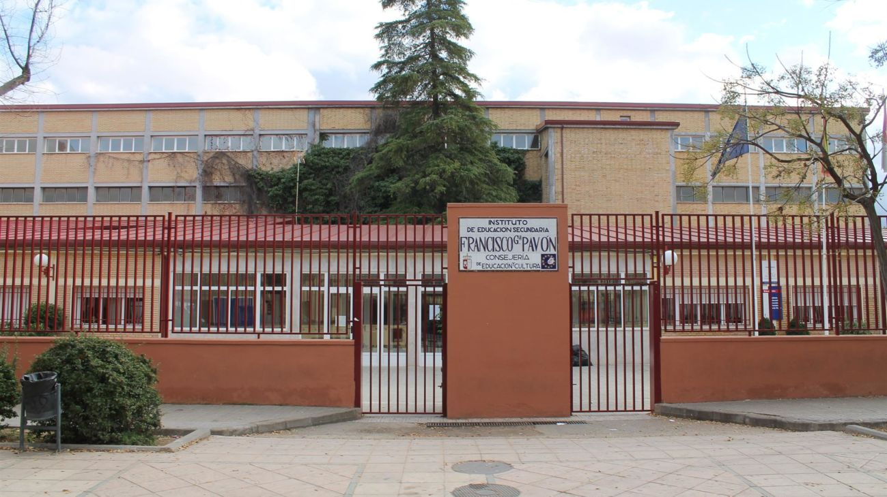

Noelia María Granados Carrasco
Hola, soy Noelia, tengo 22 años y estoy estudiando Ingeniería
Informática en la rama de Tecnologías de la Información (TI) en la
Escuela Superior de Informática de Ciudad Real.
Mis intereses son desarrollarme en el mundo de la ciberseguridad,
desarrollo en tecnologías Cloud e infraestructuras de Sistemas TI.


 
